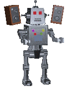
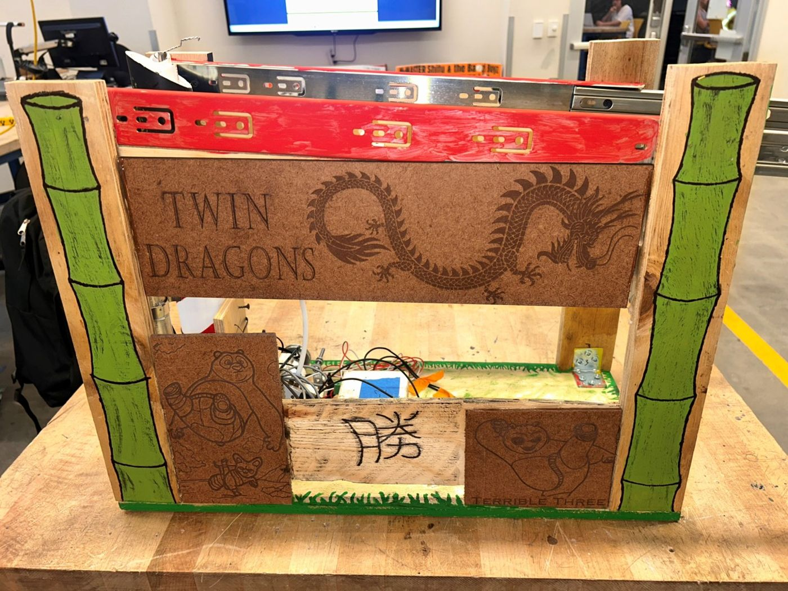
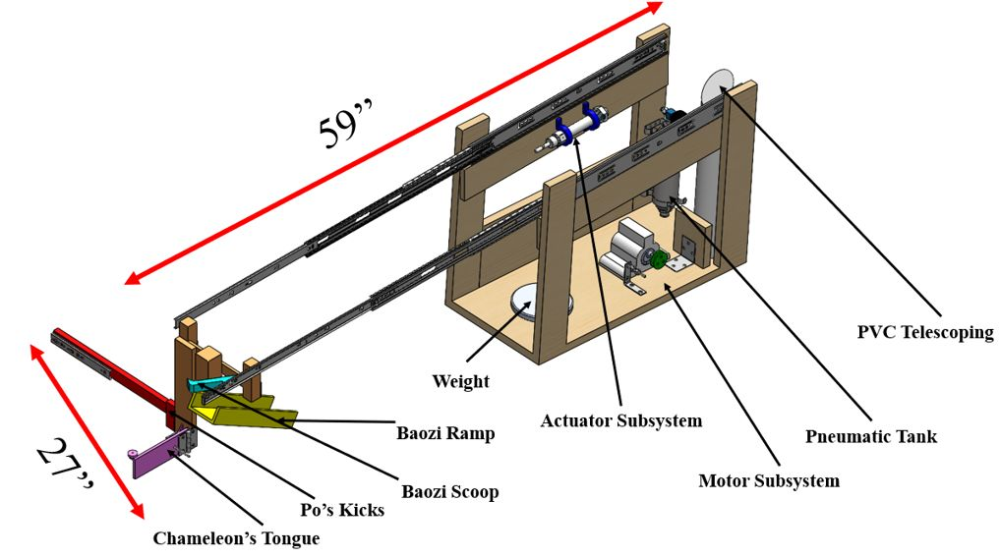
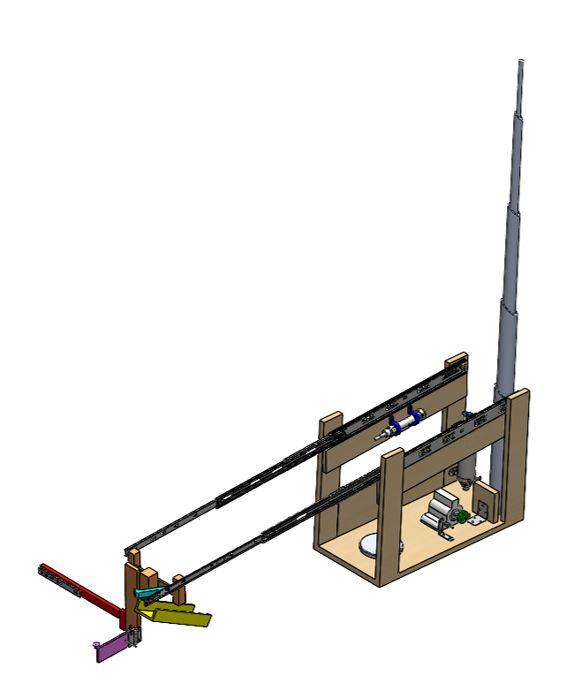
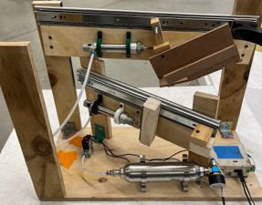
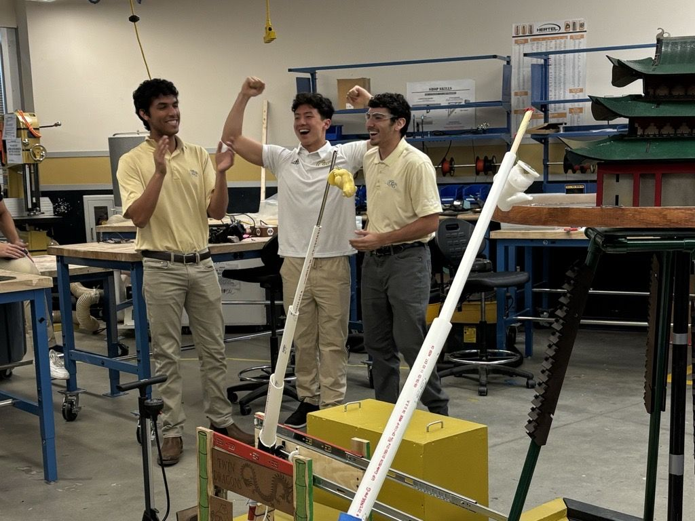
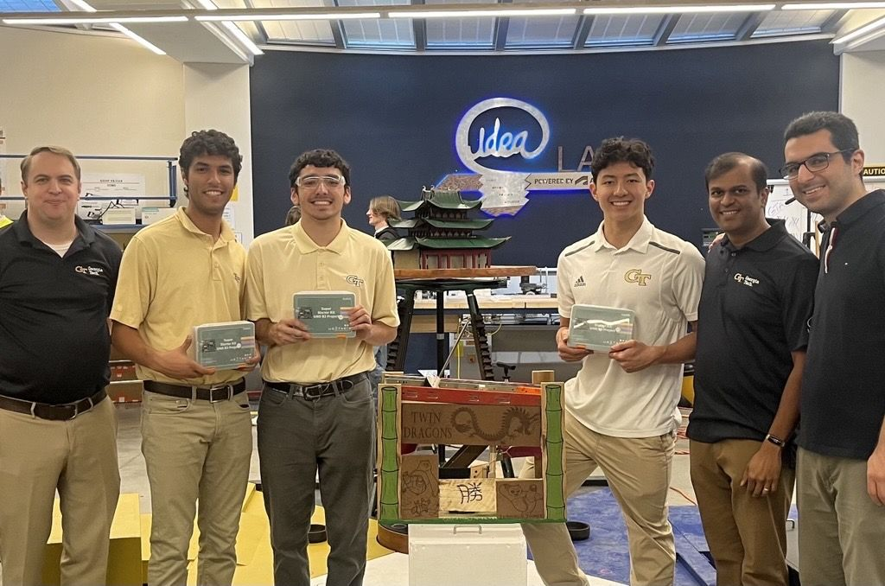

ME 2110 competition robot

Team Terrible Three (Alec Grosswald, Nicholas Trujillo, Stephen Jones) built an automated robot for the Spring 2024 ME 2110 design competition. It took 1st place of 5 teams.
1st of 53-person team30+ hrs/weekSolidWorks, C++, Arduino
Photos






How we decided
The robot had to score points, stay inside the rules, and hold up under size, cost, and parts limits. We turned customer requirements into engineering specs (QFD), then scored each concept with weighted matrices.
| Concept | Weighted score | Relative | Rank |
|---|---|---|---|
| Sprint 1 and 2 design | 242 of 316 | 0.77 | 2nd |
| Final design | 251 of 316 | 0.79 | 1st |
| Back ramp concept | 223 of 316 | 0.71 | 3rd |
Criteria included maximizing score, meeting rules, safe operation, reliability, cost, and feasibility.
Design choices
- Lift for reliability: a lift that raises the target 3 ft (not clearing the courtyard) was more feasible and matched earlier winning designs.
- Actuator subsystem: consistent through two sprints, and the actuator itself went through three iterations: drawer-slider, mouse-trap arm, then a reinforced mouse-trap arm with an impact weight and stopper.
- Disruption subsystem: deliberately inconsistent, but it scored about +1 point for us and cost opposing teams about 35 points on average.
- Process: FMEA for risks, then rapid prototyping, tests, and revisions.